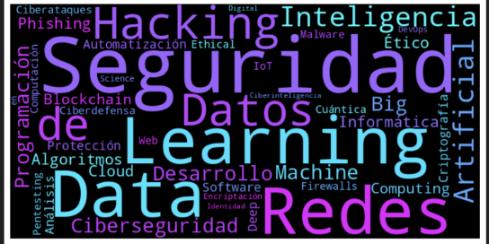
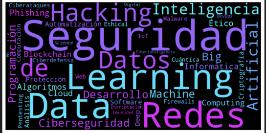

🛰️ Bienvenidos a las Jornadas Tecnológicas 2025. Un evento único donde profesionales del sector comparten sus experiencias, proyectos y visión del futuro tecnológico. ¡Explora, conecta y aprende!
 

| Horario | Lunes 31 Mar | Martes 1 Abr | Miércoles 2 Abr | Lunes 7 Abr | Miércoles 9 Abr |
|---|---|---|---|---|---|
| 9:00-9:30 | Recepción y acreditación de asistentes | ||||
| 9:30-10:30 | Bienvenida | Felipe Alonso - Taproom | Juan Carlos García - Google Cloud | Toni Martínez - Fortinet | José Andrés Sánchez - PLD Space |
| 10:30-11:30 | Pedro Prieto - AWS | Jorge Medina - Akkodis | Nicolás López - Google Dev Group | José Gómez - Tecon | Isaac Julián - Convotis Iberia |
| 11:30-12:00 | Descanso | ||||
| 12:00-13:30 | Enrique Mingorance - Red Hat | Antonio Párraga - Freepik | Mario de Felipe - Grupo ASV | Raúl Pérez - IaC Specialist | Jorge Muria - Europcar |
| 13:30-15:00 | Elad Rodríguez - NITSNETS | Jose Luis Gil - AWS | Yahima Duarte - Grafana Labs | Elluz Rodríguez - Small* | Alberto Manchado - Recursos en la Red |